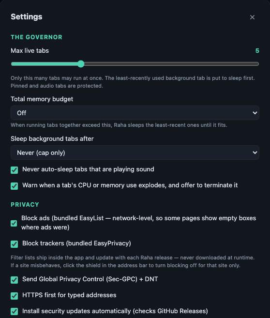

The details
This page describes Raha 0.3.3, the current version, released 11 November 2026.
How tabs are put to sleep
Five rules decide which tabs sleep, in this order.
- Per-tab memory limit. A tab over its limit sleeps, even if pinned, because you set that limit yourself. The tab you are looking at stays awake, and Raha shows a warning.
- Idle timer (off by default). A background tab left idle longer than you set goes to sleep.
- Limit on running tabs (six by default). Over the limit, the background tab used least recently sleeps first. Pinned tabs, tabs playing sound and the tab on screen are skipped.
- Memory budget (off by default). If the running tabs together use more than your budget, the least recently used sleep until they fit.
- Freeze (after two minutes by default). A background tab left idle that long is frozen until you return: it keeps its memory and uses no CPU. Pinned tabs, tabs playing sound and pages still loading are skipped.
These are defaults; each can be changed in Settings. The rules are in src/shared/policy.js. When a tab sleeps, Raha closes its process, and the memory goes back to your system (why). Back and Forward still work after it wakes.
Folders
Folders nest inside folders. A folder shows its tabs as a grid of thumbnails, and a tab can be dragged from one folder to another. After a restart the whole tree comes back asleep.
Privacy
- What Raha sends
- Raha has no telemetry, analytics or crash reports. Apart from the pages you open, it makes three kinds of request on its own. About 30 seconds after start and every four hours, it asks GitHub whether a new version exists: a few requests. They carry no cookies. Each sends the system language and an ID that is all zeros in every copy of Raha. On Windows, and on Linux with the AppImage, it then downloads a new version from GitHub in the background and installs it when you quit. On macOS it only says that one exists. Update checks are on by default, and one switch turns them off. Raha loads each tab’s icon from that tab’s site, even after a restart when every tab is asleep. On Windows and Linux, if spellcheck is set to Always, Chromium downloads a dictionary from Google.
- Ads and trackers
- Known ads and trackers are blocked with EasyList and EasyPrivacy, through Ghostery’s open-source engine. The lists ship inside the app and are not downloaded while it runs. Ads and trackers have separate switches. The shield in the address bar turns off blocking for one site.
- Global Privacy Control
- Raha asks every site not to sell or share your data, by sending
Sec-GPC: 1andDNT: 1with each request a page makes. This is on by default, and you can turn it off. - Permissions
- A site that wants your camera, microphone, location, notifications or clipboard contents must ask in Raha’s own prompt. You choose Allow once, Always allow, Never for this site, or Not now. Always allow and Never are kept for that site until you remove them in Settings; Allow once lasts until you leave the page. Full screen, locking the mouse pointer (as games do) and copying to the clipboard are allowed without a prompt. Every other permission request is refused, and Raha says so.
- Search
- DuckDuckGo by default. You can switch to Brave, Startpage, Ecosia, Google, Bing or Kagi; Kagi needs an account of your own.
- New tab page
- Built into the app. It loads nothing from the web.
- HTTPS
- A web address you type without
http://opens over HTTPS. If that fails, the error page offers plain HTTP, used only if you click it. Links, redirects,localhostand IP addresses are not upgraded. - Page isolation
- Pages run in Chromium’s sandbox, with no access to Raha itself.
- What a page may open
- Only
http:,https:,raha:andblob:addresses. A site cannot make Raha open a file from your disk (file:///…) or show a page built from adata:address, a trick used for fake login pages. - Dependencies
- Raha relies on two outside libraries, the updater and the ad-block engine, each fixed at an exact version. With the libraries those two need, 28 packages ship in the app alongside Electron; check with
npm ls --omit=dev --all. The rest is Raha’s own code, and tests enforce the rules it must not break. - Notices
- Raha includes Electron (MIT) and Chromium (BSD-style and other licences), Ghostery’s ad-block engine (MPL-2.0), and the EasyList and EasyPrivacy lists by the EasyList authors (GPL-3.0 or CC BY-SA 3.0). The 0.3.3 packages carry these licences in
LICENSE,THIRD_PARTY_NOTICES.txt,LICENSE.electron.txtandLICENSES.chromium.html.
Raha is built on Chromium, through Electron. The download is about 100–140 MB; installed, Raha takes about 300 MB. What 0.3.3 does not do is listed under Status of 0.3.3.

Installing
The 0.3.3 files are not signed with a developer certificate, so the first launch takes extra steps.
macOS: open the .dmg and drag Raha into Applications. There are two Mac files, one for Apple Silicon and one for Intel. At the first launch macOS warns that it cannot check the app for malicious software, and asks you to confirm.
Windows: run the installer. SmartScreen shows “Windows protected your PC” and asks you to confirm.
Linux: the commands for the AppImage and the .deb are beside the downloads.
The steps for each of these messages, and what to do when Raha does not open, are on the Help page.
Updating from 0.3.1
0.3.3 reads the tabs, folders, settings and history of 0.3.1 as they are. The steps for each system are on the front page, under Already using Raha?
To run the code from source (Node 22 or later):
git clone https://github.com/Magronox/raha-browser
cd raha-browser
npm install
npm startKeyboard shortcuts
On Windows and Linux, Ctrl takes the place of ⌘.
| New tab / close tab | ⌘ T / ⌘ W |
| Reopen closed tab | ⌘ ⇧ T |
| Address bar | ⌘ L |
| Find in page | ⌘ F |
| Hard reload | ⌘ ⇧ R |
| Command palette | ⌘ K |
| Grid / home | ⌘ E |
| Sidebar | ⌘ ⇧ B |
| Downloads | ⌘ J |
| History | ⌘ Y (macOS), Ctrl H |
| Next running tab | Ctrl Tab |
| Jump to running tab | ⌘ 1…9 |
| Sleep this tab / every tab | ⌘ ⇧ S / ⌘ ⇧ A |
| Freeze this tab | ⌘ ⇧ F |
| Pin | ⌘ ⇧ K |
| Settings | ⌘ , |
What changed in 0.3.3
The security advisory for 0.3.1 describes the first two.
- Client certificates. When a site asked for a client certificate, 0.3.1 sent the first matching one on the computer without asking, and the site could read what it contains, often a name, email address and organisation. 0.3.3 sends none and says which site asked.
- Install ID. Each update check in 0.3.1 sent GitHub the same random ID, kept in a
.updaterIdfile. 0.3.3 sends an all-zero ID, the same in every copy, and deletes the file. - On Linux, 0.3.1 downloaded a spellcheck dictionary from Google at first start without being asked. Windows uses the same Chromium spellchecker and was not measured. On both, 0.3.3 downloads none unless spellcheck is set to Always.
- With each tab’s back and forward steps, 0.3.1 saved in
state.jsonthe text typed into forms on those pages, and any address that held a name and password. 0.3.3 keeps only each step’s address and title, and cleans files saved by 0.3.1 at first start. Backups, and copies Raha set aside because it could not read a file, are not cleaned. - If Raha could not read its tabs, settings or history file, the next save could write over it. The file is now copied aside first, and is left alone if the copy fails.
- Clear history, Delete folder and Clear site data acted at once. They now ask first and say what is lost.
- A frame from another site shared the page’s notification and clipboard permission. It is now refused both.
- On macOS and Linux, other accounts on the computer could read Raha’s profile files. Now only yours can.
- Chromium’s advertising APIs (Topics, Protected Audience, Shared Storage, Attribution Reporting, Private State Tokens, fenced frames) were on. They are now off.
- The .deb did not start on a stock Ubuntu 24.04. It does now.
- Packages of 0.3.1 and earlier lacked Electron’s and Chromium’s licence files. 0.3.3 includes them.
- A tab that slept after its save failed woke at the top of the page with its typed text gone. Now the last good save is kept.
The CHANGELOG lists every change.
Status of 0.3.3
This table lists the known issues and limits of 0.3.3, and the plan for each. Three are fixed in 1.0. Anything here can be raised in Issues; the table is updated when a plan changes.
| Topic | In 0.3.3 | Plan |
|---|---|---|
| Privacy | ||
| Third-party cookies | Not blocked. A frame from another site can set and read its own cookies. | Fixed in 1.0. |
| Site icons | When Raha loads a site’s icon, it may send that site’s cookies. | Fixed in 1.0. |
| Typed addresses | Before its page has loaded, a typed address may decide permissions and ad blocking. | Fixed in 1.0. |
| Safe Browsing | None. Raha does not warn about dangerous sites or downloads. | After 1.0; not scheduled. |
| Fingerprinting protection | None. Sites can read what Chromium shows them about the computer. | After 1.0; not scheduled. |
| Permission checks | When a page only checks a permission, Chrome answers “prompt” and Raha answers “denied”. If the page then asks, you are asked as usual. | By design: a check can only be answered yes or no. |
| Sign-in and live pages | ||
| Passkeys and USB security keys | Not supported. Sites offer their other sign-in methods. | After 1.0; not scheduled. |
| Live connections in a frozen tab | After a frozen tab resumes, chats, calls, video and uploads may need a reload. | Open. |
| Back and Forward after a restart | Those pages load fresh, without their scroll position or typed text. | By design: only each step’s address and title are saved. |
| Install and update | ||
| Unsigned files | macOS and Windows ask you to confirm the first launch (steps). | Open. |
| Updates on macOS | Announced by a short notice, not installed, even with “Install security updates automatically” on. The new version is a download from this site (steps). | Open. A signed build would install updates. |
| Updates of the .deb | The .deb may not update itself. If it does not, the new file is installed by hand. | Open. |
What Raha does not have
Extensions, sync between computers, a built-in password manager, or a mobile version.
Security
In July 2026, before the first release, the project checked Raha against Electron’s security checklist. The eight problems found were fixed in 0.1.0 (report). Automated tests that run on each code change cover several of those fixes. SECURITY.md lists the risks that were accepted.
Support
The Help page covers the common problems. It also says how to report one, which ways of reporting are public, and how long a reply can take.
The roadmap says what comes next. Work on the code starts at CONTRIBUTING.md.
Raha is written with AI coding assistants, mainly Claude by Anthropic, which wrote most of the code and documentation. Amir Basareh decides what goes in, tests each release and is responsible for it.